一、Aspirin：不可逆的那一刀
情境場景
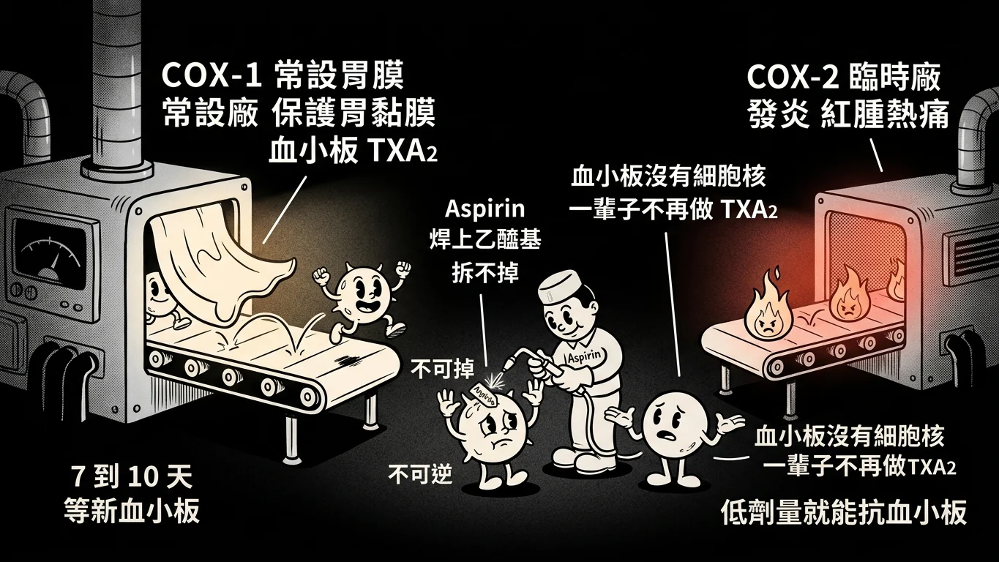
情境場景：Aspirin 在血小板的酵素上留下一個拆不掉的標記，這顆血小板一輩子就廢了。
故事
身體裡有兩座工廠都在做前列腺素，用的是同一台機器：COX 。
COX-1 是常設廠，一直開著，做的東西拿去保護胃黏膜 、讓血小板能聚集 （血小板做的那一種叫 TXA2）。COX-2 是臨時廠，發炎時才開，做的東西負責紅腫熱痛 。
大多數 NSAID 是把機器暫時卡住 ——藥一代謝掉，機器就恢復運轉。
Aspirin 不一樣。它不是卡住，是直接在機器上焊一個乙醯基。 焊上去就拆不掉，這台機器永遠報廢。
對一般細胞來說沒差，重新做一台 COX 就好。但血小板沒有細胞核 ，它做不出新的 COX-1。所以被 Aspirin 焊過的血小板，一輩子都不會再產生 TXA2 ——要等 7 到 10 天後新的血小板出來才恢復。
這就是為什麼低劑量的 Aspirin 就能抗血小板 ：不需要劑量高，只要每天焊掉新生的那一批就夠了。也是為什麼 111 年那題說它「減少暫時性腦缺血發作」是對的。
還有三件事跟著記：它偏 COX-1 ；它在體內代謝成水楊酸 ；它退燒是靠穿過血腦障壁、抑制下視丘的 PGE2 ——所以正常人吃了體溫不會降。
「那 Diflunisal 呢？」
「它是沒有乙醯基 的水楊酸類。沒有乙醯基就沒東西可以焊，所以它不是 COX-1 選擇性的那種不可逆抑制。111 年就拿這一點出題。」
機轉圖解
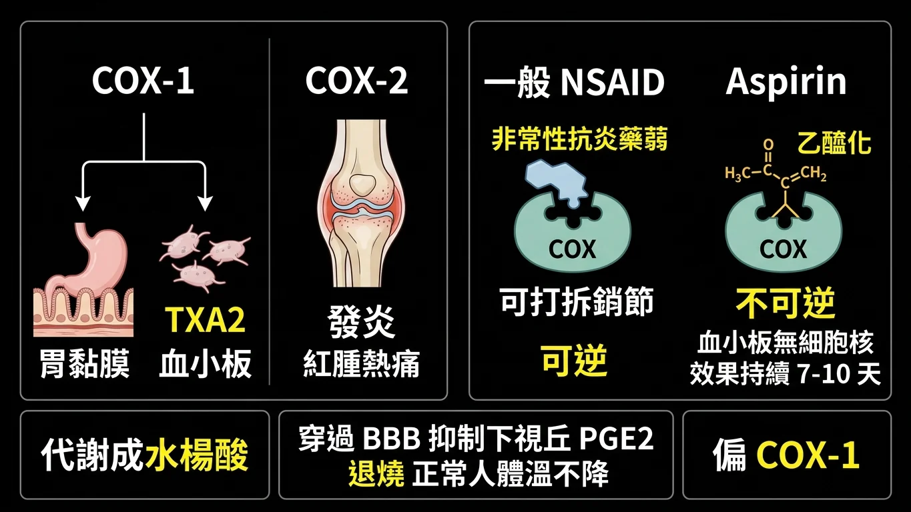
機轉圖解：COX-1 管胃與血小板、COX-2 管發炎；Aspirin 乙醯化後不可逆。
回到現實
112 年的詳解把核心一次講完：
詳解原文（112）:「(D) 錯誤。Aspirin不可逆地抑制血小板中的 COX-1，這是它與其他NSAIDs的不同之處。Aspirin透過acetylation COX-1，永久性地抑制 COX-1 的活性，從而阻止了血小板生成TXA2……因為血小板無法自行產生新的 COX-1，這種抑制作用會持續到新的血小板生成（大約7-10天）。」
113 年再補三條：
詳解原文（113）:「(B) Aspirin是脂溶性的，可穿過 BBB，作用在下視丘，抑制 PGE2的作用，避免體溫上升，所以對正常人不會有影響 (C) Aspirin會抑制內皮細胞的 PGI2 (短期抑制)，和抑制血小板的 TxA2 (長期抑制)。能夠達到預防血栓的目的，主要是因為不可逆的抑制了血小板的 TxA2 (D) Reye's syndrome發生在受病毒感染……且服用Aspirin的「Children」(而非adult)」
Aspirin 七條，三年全部考過：
① 對 COX-1 比對 COX-2 更具選擇性。 不可逆 乙醯化血小板 COX-1；效果持續到新血小板生成（7–10 天）。「reversibly」就是錯的。低劑量即可抑制血小板 ，用於預防心血管事件、減少 TIA。代謝成水楊酸 。退燒靠抑制下視丘 PGE2 ，正常人吃了體溫不降。抗血栓靠的是長期抑制血小板 TXA2 ，不是抑制內皮 PGI2（那只是短期、而且方向相反）。Reye's syndrome 發生在病毒感染的「小孩」 ，不是成人。
另一個 113 年的干擾選項值得記：Aspirin 不能取代秋水仙素治急性痛風 ——低劑量反而使尿酸滯留、加重痛風；高劑量雖促進排泄但副作用太大。這句在第五章會再出現。
水楊酸家族
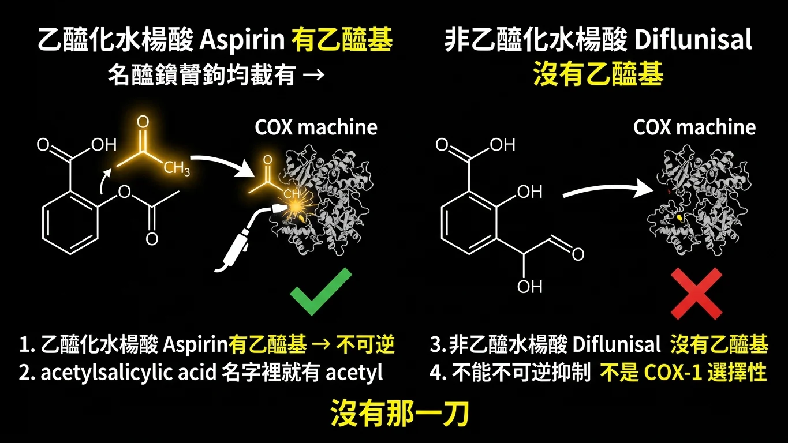
水楊酸家族：有乙醯基的 Aspirin 才能不可逆抑制；Diflunisal 沒有乙醯基。
有沒有乙醯基
111 年第 45 題把水楊酸類分成兩支：
乙醯化水楊酸（acetylated）＝ Aspirin。 有乙醯基可以焊到 COX 上 → 不可逆。
非乙醯化水楊酸（nonacetylated）＝ Diflunisal 等。 沒有乙醯基 → 不能不可逆抑制 → 不是 COX-1 選擇性抑制劑 。
詳解原文（111）:「老師的講義中並無提及Diflunisal為COX1 selective 根據其結構，並沒有乙醯基轉給COX酵素」
記法：「Aspirin」的化學名是 acetylsalicylic acid——名字裡就有 acetyl。 沒有這個字首的水楊酸類，就沒有那一刀。
111 年 期中考 第 45 題 ｜ 吳炳男
All of the following statements regarding acetylated and nonacetylated salicylates are correct EXCEPT?
(A) Diflunisal belongs to nonacetylated salicylates.
(B) Diflunisal belongs to COX-1 selective inhibitor.
(C) Aspirin selectively inhibits platelet function at low doses.
(D) Aspirin reduces the incidence of transient ischemic attacks.
答案與詳解
中文題目： 下列關於乙醯化與非乙醯化水楊酸類的敘述，何者錯誤 ？
(A) Diflunisal 屬於非乙醯化水楊酸類。
(B) Diflunisal 屬於 COX-1 選擇性抑制劑。
(C) Aspirin 在低劑量時選擇性地抑制血小板功能。
(D) Aspirin 可減少暫時性腦缺血發作的發生率。
答案：(B) Diflunisal belongs to COX-1 selective inhibitor.
詳解原文:「老師的講義中並無提及Diflunisal為COX1 selective 根據其結構，並沒有乙醯基轉給COX酵素」
Diflunisal 沒有乙醯基 ，做不到 Aspirin 那種不可逆的 COX-1 抑制。(C)(D) 是 Aspirin 抗血小板的兩個標準敘述。
出處：吳炳男 非類固醇抗發炎之藥理學 ｜ BM111 BLOCK-8 期中考詳解.pdf 第 38 頁
112 年 期中考 第 45 題 ｜ 吳炳男
Which of the following statements regarding Aspirin is wrong?
(A) It is more selective inhibition on COX-1 than on COX-2.
(B) It is metabolized to salicylic acid
(C) It inhibits platelet function at low doses
(D) It can reversibly suppress platelet COX-1
答案與詳解
中文題目： 下列關於 Aspirin 的敘述，何者錯誤 ？
(A) 它對 COX-1 的抑制比對 COX-2 更具選擇性。
(B) 它會被代謝為水楊酸。
(C) 它在低劑量時抑制血小板功能。
(D) 它可以可逆地 抑制血小板的 COX-1。
答案：D
詳解原文:「(D) 錯誤。Aspirin不可逆地抑制血小板中的 COX-1，這是它與其他NSAIDs的不同之處。……因為血小板無法自行產生新的 COX-1，這種抑制作用會持續到新的血小板生成（大約7-10天）。」
「reversibly」一個字就錯了。 Aspirin 的乙醯化是不可逆的，這是它與其他 NSAID 最大的分野。
出處：吳炳男 非類固醇抗炎藥物之藥理學 ppt pg.7, 9 ｜ BM112_Block 8 期中考(含申覆內容與結果).pdf 第 61 頁
113 年 期末考 第 19 題 ｜ 陳柏任
Which of the following statements about aspirin is correct ?
(A) It can be replace colchicine in the treatment of acute gout.
(B) Its antipyretic effect is due to inhibition of hypothalamic PGE₂.
(C) It prevents thrombosis by inhibiting PGI₂ in vascular endothelial cells.
(D) Use of aspirin in adults with influenza increases the risk of Reye's syndrome.
答案與詳解
中文題目： 下列關於 aspirin 的敘述，何者正確 ？
(A) 它可以取代秋水仙素治療急性痛風。
(B) 它的退燒作用來自抑制下視丘的 PGE₂。
(C) 它藉由抑制血管內皮細胞的 PGI₂ 來預防血栓。
(D) 成人流感時使用 aspirin 會增加 Reye's syndrome 的風險。
答案：(B)
詳解原文:「(A) 急性痛風應使用Colchicine……Aspirin低劑量(1-2 g/d)會加重痛風 (B) Aspirin是脂溶性的，可穿過 BBB，作用在下視丘，抑制 PGE2的作用 (C) ……能夠達到預防血栓的目的，主要是因為不可逆的抑制了血小板的 TxA2 (D) Reye's syndrome發生在……「Children」(而非adult)」
三個錯項各錯一處：急性痛風不用 Aspirin 、抗血栓靠的是血小板 TXA2 不是內皮 PGI2 、Reye's 是小孩不是成人 。
出處：陳柏任 非類固醇抗炎藥物之藥理學 ppt pg. 17、18、24 ｜ BM113_Block8期末考詳解.pdf 第 17 頁
二、Acetaminophen：它不是消炎藥
情境場景
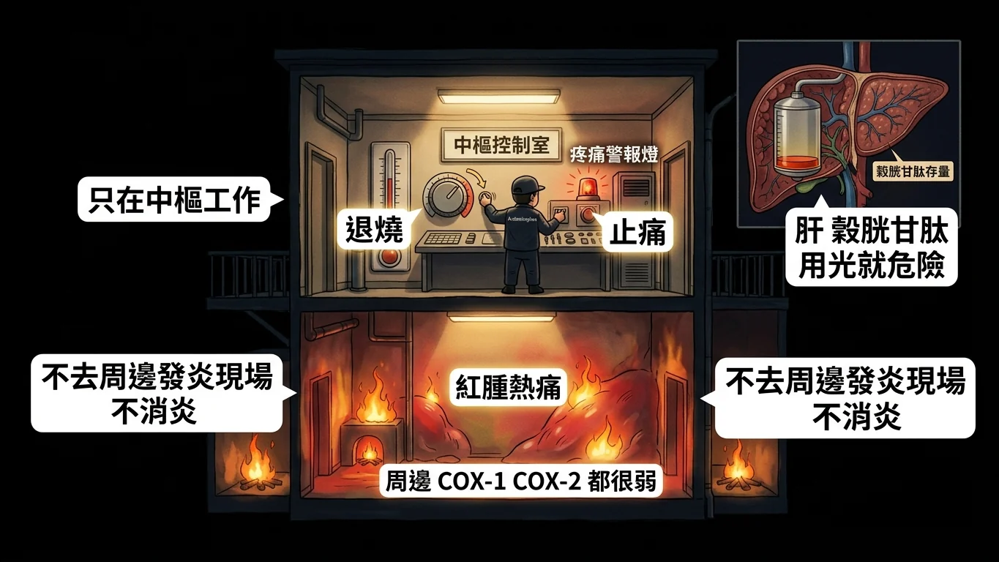
情境場景：它只在中樞工作，不去周邊的發炎現場，所以退燒止痛卻不消炎。
故事
Acetaminophen（普拿疼）常被放在 NSAID 這堂課裡講，但它其實是個異類 ：它幾乎不去周邊組織的發炎現場 。它對周邊的 COX-1、COX-2 都很弱，主要作用在中樞。所以它能退燒、能止痛，卻沒有消炎作用 。
三年三題，每一年都有一個選項想騙你說它「有強效抗發炎作用」或「強力抑制周邊 COX」——全部是錯的 。
既然它這麼溫和，考題就轉去問它唯一的危險 ：肝。
正常劑量下，它的代謝產物會被肝臟裡的穀胱甘肽 （glutathione）中和掉。但一次吞太多——例如一次三十顆——穀胱甘肽用光，有毒的代謝物就直接攻擊肝細胞，造成致命的肝壞死 。
解法是補穀胱甘肽。但穀胱甘肽本身吃了沒用，要給它的前驅物——N-acetylcysteine（NAC，就是愛克痰） 。NAC 進去以後把穀胱甘肽還原 回有作用的還原態 ，肝就能繼續解毒。
「所以『增加氧化態穀胱甘肽有助解毒』——」
「錯。能解毒的是還原態 。氧化態是已經用掉的。113 年就考這個。」
最後兩個數字：成人一天不要超過 4 公克 （111 年寫 10 公克就是錯的）；長期使用會傷腎 。
解毒圖解
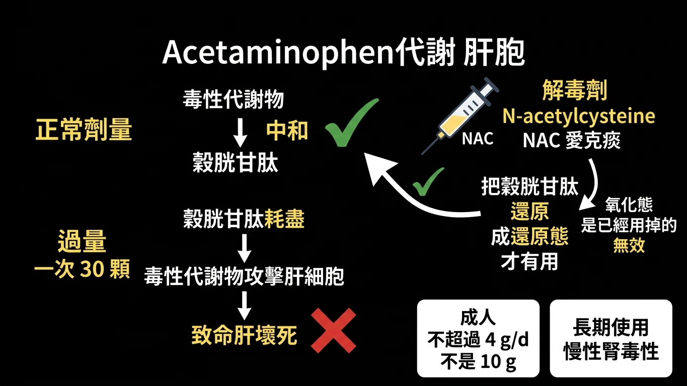
解毒圖解：過量時穀胱甘肽耗盡、肝壞死；NAC 補回還原態穀胱甘肽。
回到現實
詳解原文（112）:「AB：Acetaminophen較特別，為COX-2b inhibitor，其效果為鎮痛解熱，無「消炎作用」因此AB都錯 D：Antidote為N-acetylcysteine（複習一下，他是愛克痰）」
詳解原文（113）:「(C) Glutathione要達到detoxification的效果必須要是reduced form，如同NAC的作用就是還原glutathione，才可以解Acetaminophen過量的問題」
Acetaminophen 六條：
① 無消炎作用 ；周邊 COX-1／COX-2 抑制都弱。鎮痛、解熱 是它的兩個用途。不超過 4 g/d 。致命肝壞死 。N-acetylcysteine（NAC） ，作用是把穀胱甘肽還原 成有效的還原態。長期使用可致慢性腎毒性 。
三年的錯項全是同一招——把 NSAID 的特性安到它頭上 （強效消炎、強力抑制周邊 COX）——或把數字放大 （10 g/d）、把解毒說反 （無解毒劑／氧化態才有效）。
111 年 期中考 第 46 題 ｜ 吳炳男
Which of the following statements regarding Acetaminophen is correct?
(A) It has significant COX-2 inhibitory actions.
(B) It has potent anti-inflammatory effects.
(C) Dosing in adults is recommended not to exceed 10 g/d.
(D) N-acetylcysteine can be used for those at risk of hepatic injury.
答案與詳解
中文題目： 下列關於 Acetaminophen 的敘述，何者正確 ？
(A) 它有顯著的 COX-2 抑制作用。
(B) 它有強效的抗發炎作用。
(C) 成人建議劑量不超過每日 10 公克。
(D) N-acetylcysteine 可用於有肝損傷風險者。
答案：(D) N-acetylcysteine can be used for those at risk of hepatic injury.
原卷詳解欄留空 。(A)(B) 都是把 NSAID 的特性硬安上去；(C) 的上限是 4 g/d ，不是 10。
出處：吳炳男 非類固醇抗發炎之藥理學 ｜ BM111 BLOCK-8 期中考詳解.pdf 第 39 頁
112 年 期中考 第 46 題 ｜ 吳炳男
Which of the following statements regarding Acetaminophen is correct?
(A) It has potent anti-inflammatory effects.
(B) It has a strong COX-1 and COX-2 inhibition in peripheral tissues.
(C) Dosing in adults is recommended not to exceed 4 g/d in most cases.
(D) No antidote can be used for the drug overdose-induced hepatic necrosis.
答案與詳解
中文題目： 下列關於 Acetaminophen 的敘述，何者正確 ？
(A) 它有強效的抗發炎作用。
(B) 它在周邊組織對 COX-1 與 COX-2 有強力抑制。
(C) 成人建議劑量在多數情況下不超過每日 4 公克。
(D) 藥物過量造成的肝壞死沒有解毒劑可用。
答案：C
詳解原文:「AB：Acetaminophen較特別，為COX-2b inhibitor，其效果為鎮痛解熱，無「消炎作用」因此AB都錯 D：Antidote為N-acetylcysteine（複習一下，他是愛克痰）」
與 111 年是同一組事實換個排列：這年把正確的數字（4 g/d）放進來當答案，把解毒劑改寫成「沒有解毒劑」當錯項。
出處：吳炳男 非類固醇抗炎藥物之藥理學 ppt pg.19 ｜ BM112_Block 8 期中考(含申覆內容與結果).pdf 第 65 頁
113 年 期末考 第 20 題 ｜ 陳柏任
Which of the following statements about acetaminophen toxicity is incorrect ?
(A) Taking 30 tablets at once can cause fatal hepatic necrosis.
(B) The antidote for acetaminophen overdose is N-acetylcysteine (NAC).
(C) Increasing oxidized glutathione levels in liver helps detoxification.
(D) Long-term use may lead to chronic nephrotoxicity.
答案與詳解
中文題目： 下列關於 acetaminophen 毒性的敘述，何者錯誤 ？
(A) 一次服用 30 顆可造成致命的肝壞死。
(B) Acetaminophen 過量的解毒劑是 N-acetylcysteine（NAC）。
(C) 提高肝臟中氧化態 穀胱甘肽的濃度有助於解毒。
(D) 長期使用可能導致慢性腎毒性。
答案：(C)
詳解原文:「(C) Glutathione要達到detoxification的效果必須要是reduced form，如同NAC的作用就是還原glutathione，才可以解Acetaminophen過量的問題，也就是(B)的概念。」
這年考得更深一層：解毒靠的是「還原態」穀胱甘肽 ，NAC 的工作就是把它還原。寫成「氧化態」就反了。
出處：非類固醇抗炎藥物之藥理學 陳柏任 ｜ BM113_Block8期末考詳解.pdf 第 20 頁
三、COX-2 選擇性：保胃，不保心
情境場景
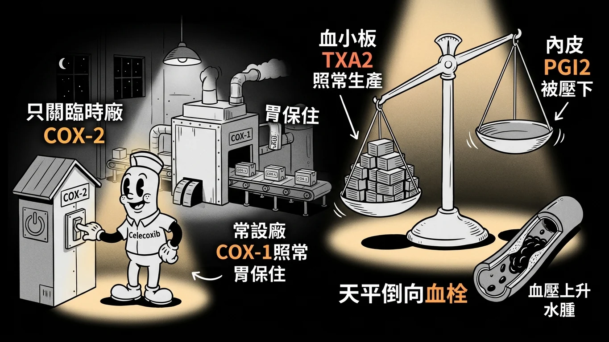
情境場景：只關臨時廠、不動常設廠——胃保住了，但天平往血栓那邊倒。
故事
傳統 NSAID 最大的問題是胃 ：因為它連 COX-1 一起關，胃黏膜的保護就沒了。
於是有人想：只關臨時廠（COX-2）、不動常設廠（COX-1）不就好了？ 這就是 COX-2 選擇性抑制劑——Celecoxib、Etoricoxib 這一家。
它們確實做到了兩件事：胃潰瘍的風險大幅下降 ，而且因為不碰血小板的 COX-1，正常劑量下不影響血小板聚集 ——111 與 112 年的答案都是這一句。
但身體裡有一座天平。
血小板那邊做 TXA2 （促進凝血），靠 COX-1；血管內皮那邊做 PGI2 （抑制凝血、擴張血管），主要靠 COX-2。傳統 NSAID 兩邊一起壓，天平不動。COX-2 選擇性抑制劑只壓 PGI2 那一邊，TXA2 照常生產 ——長期下來，天平就往血栓 那一側倒。
所以這家藥的副作用表是：胃潰瘍少、但血栓風險增加、血壓上升、水腫 。113 年問「哪一個風險最不可能發生」，答案是胃潰瘍 ；111 年說「不會有水腫」「會降低血栓風險」「會增加 PGI2」，全部是錯的。
天平圖解
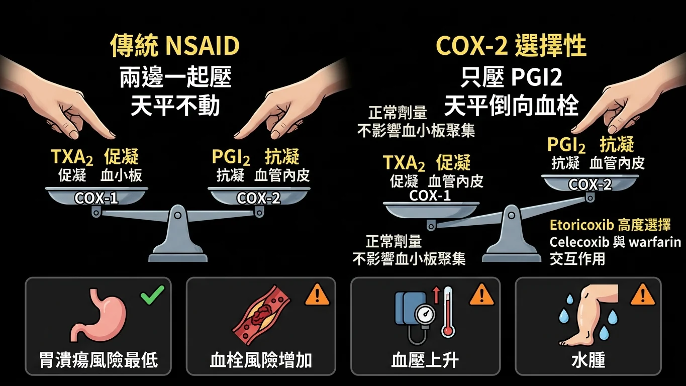
天平圖解：TXA2 促凝、PGI2 抗凝；只壓 COX-2 使天平倒向血栓。
回到現實
詳解原文（112）:「可看到cox-2幾乎沒有影響血小板凝集作用 所以正常劑量下不影響」
COX-2 選擇性抑制劑五條，三年全考過：
① 正常劑量下不影響血小板聚集 （血小板只有 COX-1）。長期使用會減少循環中的 PGI2 （不是增加）。增加血栓風險 （不是降低）。會有水腫與高血壓 （不是「沒有水腫」）。胃腸潰瘍風險最低 ——這是它存在的理由。
另外兩條小的：Etoricoxib 是高度選擇性的 COX-2 抑制劑 ；Celecoxib 與 warfarin 有交互作用 （113 年把它列為「會發生的風險」之一）。
解題只要記住方向：凡是說 COX-2 選擇性抑制劑「對心血管有好處」或「沒有心血管副作用」的敘述，一律是錯的；凡是說它「對胃比較好」的，一律是對的。
111 年 期中考 第 48 題 ｜ 吳炳男
Which of the following statements regarding COX-2 inhibitors is correct?
(A) There are no incidences of edema.
(B) They have no impact on platelet aggregation at usual doses.
(C) They increase circulating prostacyclin during long-term therapy.
(D) They decrease the incidence of thrombotic risk.
答案與詳解
中文題目： 下列關於 COX-2 抑制劑的敘述，何者正確 ？
(A) 不會發生水腫。
(B) 在正常劑量下不影響血小板聚集。
(C) 長期治療會增加循環中的前列環素。
(D) 它們會降低血栓風險的發生率。
答案：(B) They have no impact on platelet aggregation at usual doses.
原卷詳解欄留空 。三個錯項全部把方向寫反：會 水腫、PGI2 是減少 、血栓風險是增加 。
出處：吳炳男 非類固醇抗發炎之藥理學(ppt pg.5) ｜ BM111 BLOCK-8 期中考詳解.pdf 第 40 頁
112 年 期中考 第 47 題 ｜ 吳炳男
Which of the following statements regarding the COX-2 selective inhibitors is wrong?
(A) It can be linked to an increase in thrombotic risk.
(B) It affects platelet aggregation at usual doses
(C) Reduction of circulating PGI2 during long-term therapy
(D) Etoricoxib is a highly selective COX-2 inhibitor
答案與詳解
中文題目： 下列關於 COX-2 選擇性抑制劑的敘述，何者錯誤 ？
(A) 它可能與血栓風險增加有關。
(B) 它在正常劑量下會影響血小板聚集。
(C) 長期治療會減少循環中的 PGI2。
(D) Etoricoxib 是高度選擇性的 COX-2 抑制劑。
答案：B
詳解原文:「可看到cox-2幾乎沒有影響血小板凝集作用 所以正常劑量下不影響」
與 111 年同一句，改成「哪句錯」：它不影響血小板 ，所以說它「會影響」就錯。(A)(C) 是前一年的錯項改正後的版本。
出處：吳炳男 非類固醇抗炎藥物之藥理學 ppt pg.5 ｜ BM112_Block 8 期中考(含申覆內容與結果).pdf 第 66 頁
113 年 期末考 第 22 題 ｜ 陳柏任
Which of the following is a risk least likely to occur with the use of celecoxib ?
(A) Gastrointestinal ulcer
(B) Hypertension
(C) Drug interaction with warfarin
(D) Thrombosis
答案與詳解
中文題目： 使用 celecoxib 時，下列哪一種風險最不可能 發生？
(A) 胃腸潰瘍
(B) 高血壓
(C) 與 warfarin 的藥物交互作用
(D) 血栓
答案：(A)
原卷詳解欄留空 。保胃是這家藥存在的理由 ，所以胃腸潰瘍是最不可能的；高血壓、血栓、與 warfarin 的交互作用都是它已知的風險。
出處：非類固醇抗炎藥物之藥理學 陳柏任 ppt p.39 ｜ BM113_Block8期末考詳解.pdf 第 21 頁
四、每年抽一顆：Nabumetone、Indomethacin、Meloxicam
情境場景
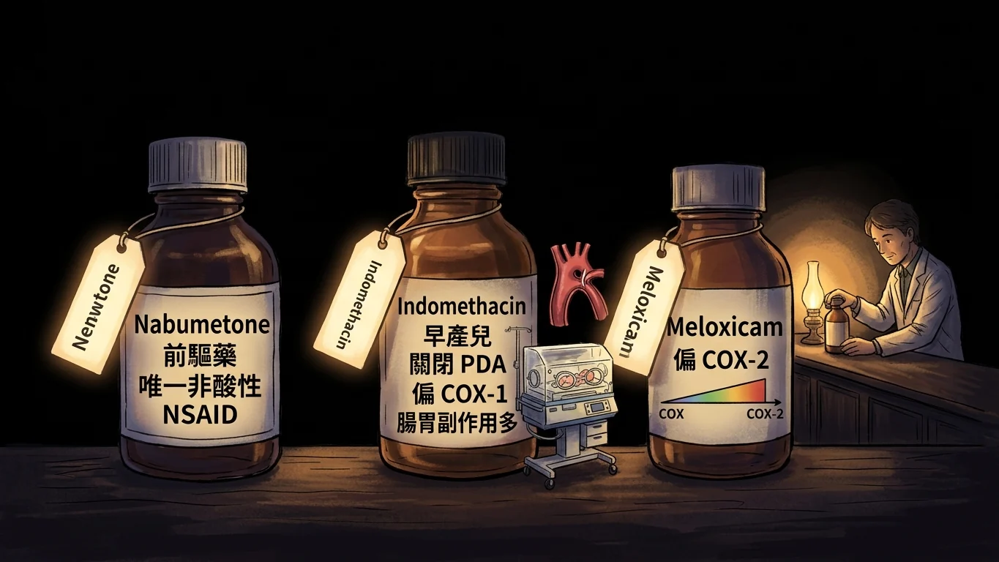
情境場景：一排 NSAID 裡，每一顆都有一個只屬於它的標籤。
故事
六個題位裡有一格是「浮動的」：每年從一整排 NSAID 裡抽一顆出來，問它獨有的那個特徵 。三年抽了三顆，正好是三種不同的問法。
111 年抽 Nabumetone。 它有兩個「唯一」：它是前驅藥 （吃進去要先代謝才有活性），而且是目前唯一的非酸性 NSAID 。其他 NSAID 幾乎全是酸——這正是它們傷胃的原因之一——只有它不是。
112 年抽 Indomethacin。 它的獨門用途是幫早產兒關閉開放性動脈導管 （PDA）。動脈導管靠前列腺素維持開放，把前列腺素壓下去它就會關。它也是急性痛風時秋水仙素的替代選項——第五章會再提。副作用偏 COX-1，所以腸胃不適多。
113 年抽 Meloxicam。 它是 oxicam 類裡偏向 COX-2 的那一個。題目給了四顆藥問誰的 COX-2 選擇性最強：Ibuprofen 和 Mefenamic acid 是非選擇性、Indomethacin 偏 COX-1，只有 Meloxicam 偏 COX-2。
所以這一格的複習方式，就是把每顆藥的那一個標籤 記住。
標籤對照
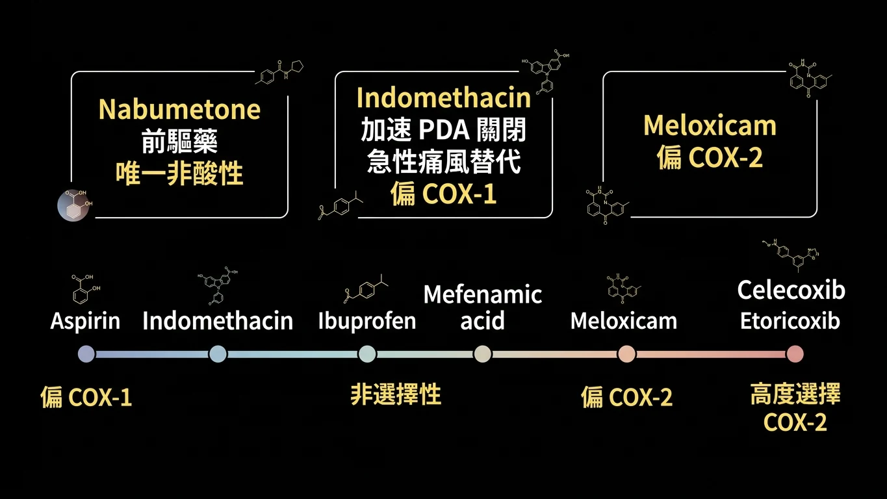
標籤對照：各 NSAID 的獨門特徵與 COX 選擇性光譜。
回到現實
詳解原文（111）:「(A)上課時老師有提及唯一非酸性NSAID就是Nabumetone」
詳解原文（113）:「（A）Ibuprofen：非選擇性，COX-1/COX-2 都抑制。（B）Meloxicam： COX-2 選擇性（本題最強）。（C）Mefenamic acid：非選擇性，對 COX-1/COX-2 相近。（D）Indomethacin：偏 COX-1，胃腸副作用較多。」
三顆藥、三個標籤：
・Nabumetone ：前驅藥 ＋唯一非酸性 NSAID 。Indomethacin ：加速 PDA 關閉 ；急性痛風的替代藥；偏 COX-1、腸胃副作用多。Meloxicam ：偏 COX-2 （在 ibuprofen、mefenamic acid、indomethacin 之中選擇性最強）。
COX 選擇性光譜 （由偏 COX-1 到偏 COX-2）：Aspirin、Indomethacin → Ibuprofen、Mefenamic acid （非選擇性）→ Meloxicam （偏 COX-2）→ Celecoxib、Etoricoxib （高度選擇 COX-2）。
干擾選項的池子也固定：Meloxicam、Tenoxicam 是 oxicam 類（酸性）；Celecoxib 是 COX-2 選擇性；Mefenamic acid 是 fenamate 類。它們都不是「非酸性」，也都不是 PDA 的用藥。
111 年 期中考 第 47 題 ｜ 吳炳男
Which of the following NSAIDs is a prodrug and the only nonacid NSAID currently used?
(A) Nabumetone
(B) Meloxicam
(C) Tenoxicam
(D) Celecoxib
答案與詳解
中文題目： 下列哪一種 NSAID 是前驅藥，且是目前唯一使用中的非酸性 NSAID？
(A) Nabumetone
(B) Meloxicam
(C) Tenoxicam
(D) Celecoxib
答案：(A) Nabumetone
詳解原文:「(A)上課時老師有提及唯一非酸性NSAID就是Nabumetone」
兩個「唯一」都指向它。(B)(C) 是 oxicam 類的酸性藥，(D) 是 COX-2 選擇性抑制劑。
出處：吳炳男 非類固醇抗發炎之藥理學 ｜ BM111 BLOCK-8 期中考詳解.pdf 第 39 頁
112 年 期中考 第 48 題 ｜ 吳炳男
Which of the following drugs can accelerate the closure of a patent ductus arteriosus?
(A) Aspirin,
(B) Indomethacin,
(C) Nabumetone,
(D) Mefenamic acid
答案與詳解
中文題目： 下列哪一種藥物可以加速開放性動脈導管的關閉？
(A) Aspirin
(B) Indomethacin
(C) Nabumetone
(D) Mefenamic acid
答案：B
原卷詳解欄留空 。動脈導管靠前列腺素維持開放；Indomethacin 是臨床上用來促其關閉的 NSAID 。這是它的獨門標籤。
出處：吳炳男 非類固醇抗炎藥物之藥理學 ppt pg.22 ｜ BM112_Block 8 期中考(含申覆內容與結果).pdf 第 67 頁
113 年 期末考 第 21 題 ｜ 陳柏任
Among the following NSAIDs, which shows stronger COX-2 selectivity ?
(A) Ibuprofen
(B) Meloxicam
(C) Mefenamic acid
(D) Indomethacin
答案與詳解
中文題目： 下列 NSAID 中，何者表現出較強的 COX-2 選擇性？
(A) Ibuprofen
(B) Meloxicam
(C) Mefenamic acid
(D) Indomethacin
答案：(B)
詳解原文:「（A）Ibuprofen：非選擇性，COX-1/COX-2 都抑制。（B）Meloxicam： COX-2 選擇性（本題最強）。（C）Mefenamic acid：非選擇性，對 COX-1/COX-2 相近。（D）Indomethacin：偏 COX-1，胃腸副作用較多。」
四顆藥在光譜上的位置：Indomethacin 偏 COX-1 → Ibuprofen、Mefenamic acid 非選擇性 → Meloxicam 偏 COX-2 。
出處：非類固醇抗炎藥物之藥理學 陳柏任 PPT p.37 ｜ BM113_Block8期末考詳解.pdf 第 21 頁
五、痛風：急性壓發炎、慢性降尿酸
情境場景
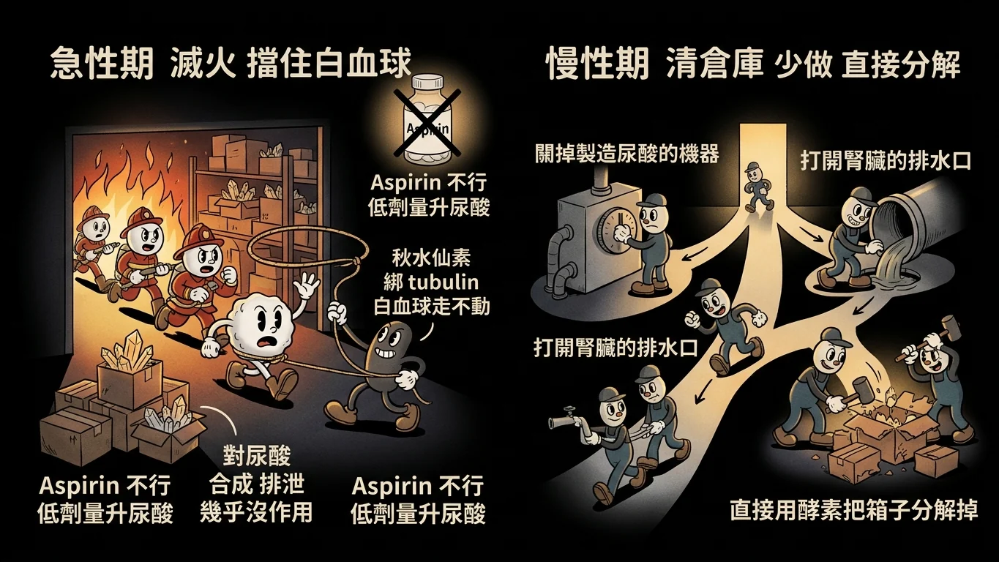
情境場景：火燒起來的時候先滅火，火滅了才去清倉庫裡的易燃物。
故事
痛風是關節裡堆了尿酸結晶，白血球衝進去吞結晶、引發劇烈發炎。治療分成兩個完全不同的階段 ，用的藥也是兩套。
急性期：滅火。 此時要做的是擋住白血球 ，不是動尿酸。第一線是秋水仙素 （colchicine）：它綁住細胞裡的微管蛋白 （tubulin），白血球就走不動、也吞不了東西。注意——它對尿酸的合成與排泄幾乎沒有作用 。111 年說它「減少尿酸合成與排泄」，錯；113 年說它「對尿酸排泄影響很小」，對。替代品是 Indomethacin （NSAID 壓發炎）。Aspirin 不行 ——低劑量反而讓尿酸滯留。
慢性期：清倉庫。 火滅了才開始降尿酸，途徑有三：
・少做 ：抑制黃嘌呤氧化酶（xanthine oxidase）。Allopurinol （注意 Stevens–Johnson 症候群的風險）與 Febuxostat （腎功能不好也能用）。多排 ：Probenecid、Sulfinpyrazone ，擋住腎小管把尿酸再吸收回去——擋的位置是近端 小管，112 年寫「遠端」就是錯的。直接分解 ：Pegloticase ，下一段。
「急性發作的時候可不可以順便開 Probenecid？」
「不行。 急性期突然把尿酸濃度拉下來，結晶會重新溶出、發作反而更兇。降尿酸藥要等急性期過了再開。113 年考的就是這句。」
痛風藥對照
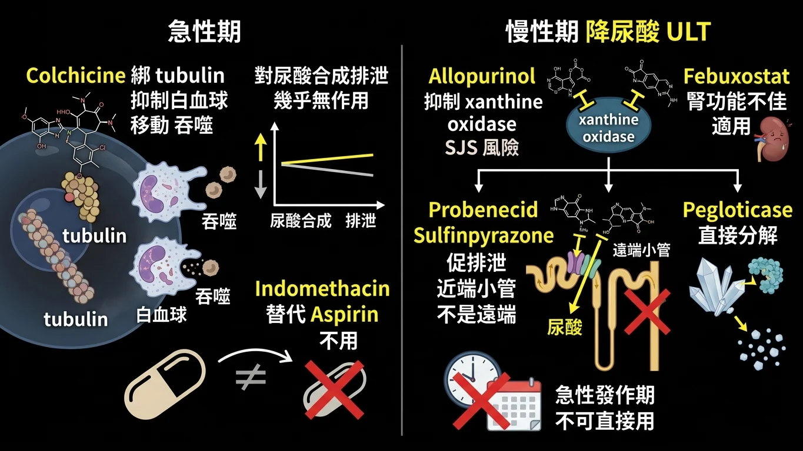
痛風藥對照：急性期用秋水仙素或 Indomethacin；慢性期抑制合成、促進排泄或直接分解。
回到現實 ① 急性與慢性
詳解原文（111）:「Colchicine主要作用是抑制白血球的移動和吞噬作用，是針對急性痛風。」
詳解原文（113）:「(C)錯誤。 Probenecid 是一種促尿酸排泄藥物 (uricosuric agent)，屬於「降尿酸藥物」(Urate-Lowering Therapy, ULT)。」
急性期（壓發炎） ：Colchicine ：綁 tubulin ，抑制白血球移動與吞噬；對尿酸合成與排泄幾乎無作用 。Indomethacin ：可作為秋水仙素的替代。Aspirin 不用 （低劑量加重痛風）。
慢性期（降尿酸，ULT） ：Allopurinol ：抑制 xanthine oxidase；有 Stevens–Johnson syndrome 風險。Febuxostat ：抑制 xanthine oxidase，減少總尿酸負荷；腎功能不佳者適用 。Probenecid、Sulfinpyrazone ：促尿酸排泄（uricosuric），阻斷腎近端 小管的主動再吸收；不可在急性發作期直接使用 。
Pegloticase 圖解
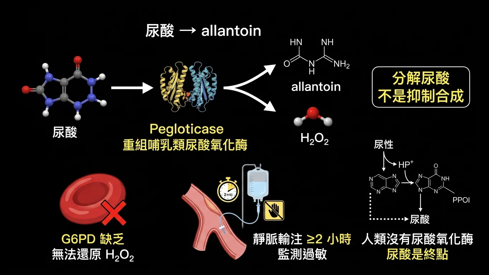
Pegloticase 圖解：尿酸氧化酶把尿酸變成 allantoin 與 H2O2，G6PD 缺乏者無法處理 H2O2。
回到現實 ② Pegloticase
人類沒有尿酸氧化酶，所以尿酸是我們嘌呤代謝的終點。Pegloticase 就是把哺乳類的尿酸氧化酶做成重組蛋白 ，打進去直接把尿酸氧化成尿囊素 （allantoin）——更可溶、無活性、容易排掉。
詳解原文（113）:「(A) Pegloticase converts uric acid to allantoin, it doesn't inhibit uric acid biosynthesis. (B) One of its ADR is nephrolithiasis but it has nothing to do with G6PD deficiency. G6PD deficiency patients are unable to reduce H2O2. (C) Correct (D) IV ≥ 2hrs」
Pegloticase 五條，三年全考過：
① 是重組哺乳類尿酸氧化酶 （recombinant mammalian urate oxidase / uricase）。allantoin （同時產生 H2O2 ）。它是分解尿酸 ，不是抑制合成。G6PD 缺乏者禁用 ——因為他們無法還原 H2O2，會溶血。難治性慢性痛風 。靜脈輸注需超過 2 小時並注意過敏反應 ，不是「無需特別注意」。
113 年的 (B) 是精心設計的半真半假：腎結石確實是它的副作用之一，但跟 G6PD 無關 ——G6PD 缺乏引起的問題是 H2O2 處理不了，不是結石。
111 年 期中考 第 49 題 ｜ 吳炳男
All of the following statements about anti-gout agents are correct except
(A) Colchicine can reduce uric acid synthesis and excretion.
(B) Probenecid and sulfinpyrazone are uricosuric agents.
(C) Febuxostat reduces total uric acid body burden by inhibiting xanthine oxidase.
(D) Indomethacin can be alternatively used in acute gout.
答案與詳解
中文題目： 下列關於抗痛風藥物的敘述，何者錯誤 ？
(A) 秋水仙素可以減少尿酸的合成與排泄。
(B) Probenecid 與 sulfinpyrazone 是促尿酸排泄劑。
(C) Febuxostat 藉由抑制黃嘌呤氧化酶減少全身尿酸負荷。
(D) Indomethacin 可作為急性痛風的替代用藥。
答案：(A) Colchicine can reduce uric acid synthesis and excretion.
詳解原文:「Colchicine主要作用是抑制白血球的移動和吞噬作用，是針對急性痛風。」
秋水仙素不動尿酸 ，它只管白血球。其餘三句都是標準敘述。
出處：吳炳男 非類固醇抗發炎之藥理學 ｜ BM111 BLOCK-8 期中考詳解.pdf 第 40 頁
112 年 期中考 第 49 題 ｜ 吳炳男
Which of the following statements regarding the anti-gout agents is wrong?
(A) Colchicine can bind to intracellular protein tubulin.
(B) Indomethacin can be used in acute gout as a replacement for colchicine.
(C) Febuxostat reduces total uric acid body burden by inhibiting xanthine oxidase.
(D) Probenecid blocks the active reabsorption of uric acid at the renal distal tubule.
答案與詳解
中文題目： 下列關於抗痛風藥物的敘述，何者錯誤 ？
(A) 秋水仙素可與細胞內蛋白質微管蛋白結合。
(B) Indomethacin 可在急性痛風時取代秋水仙素使用。
(C) Febuxostat 藉由抑制黃嘌呤氧化酶減少全身尿酸負荷。
(D) Probenecid 阻斷腎臟遠端 小管對尿酸的主動再吸收。
答案：D
原卷詳解欄留空 。Probenecid 阻斷的是近端 小管的尿酸再吸收，不是遠端。(A) 是秋水仙素的正確機轉（綁 tubulin），(B)(C) 與 111 年相同。
出處：吳炳男 非類固醇抗炎藥物之藥理學 ppt pg.31-33 ｜ BM112_Block 8 期中考(含申覆內容與結果).pdf 第 68 頁
113 年 期末考 第 24 題 ｜ 陳柏任
Which of the following statements about drugs used in gout is incorrect ?
(A) Allopurinol carries the risk of Stevens–Johnson syndrome.
(B) Febuxostat is suitable for patients with renal impairment.
(C) Probenecid can be used directly during an acute gout attack.
(D) Colchicine has little effect on uric acid excretion.
答案與詳解
中文題目： 下列關於痛風用藥的敘述，何者錯誤 ？
(A) Allopurinol 有 Stevens–Johnson 症候群的風險。
(B) Febuxostat 適用於腎功能不全的病人。
(C) Probenecid 可在急性痛風發作期間直接使用。
(D) 秋水仙素對尿酸排泄的影響很小。
答案：(C)
詳解原文:「C)錯誤。 Probenecid 是一種促尿酸排泄藥物 (uricosuric agent)，屬於「降尿酸藥物」(Urate-Lowering Therapy, ULT)。」
降尿酸藥不在急性期開 ——急性期只壓發炎。(D) 是 111 年錯項的反面，這年寫對了。
出處：非類固醇抗炎藥物之藥理學 陳柏任p49 ｜ BM113_Block8期末考詳解.pdf 第 23 頁
111 年 期中考 第 50 題 ｜ 吳炳男
Which of the following anti-gout agents is a recombinant mammalian urate oxidase that catalyzes the enzymatic oxidation of uric acid into allantoin, a more soluble and in active metabolite?
(A) Colchicine
(B) Allopurinol
(C) Probenecid
(D) Pegloticase
答案與詳解
中文題目： 下列哪一種抗痛風藥物是重組哺乳類尿酸氧化酶，能催化尿酸酵素性氧化為尿囊素（一種更可溶且無活性的代謝物）？
(A) 秋水仙素
(B) Allopurinol
(C) Probenecid
(D) Pegloticase
答案：(D) Pegloticase
原卷詳解欄留空 。題幹就是 Pegloticase 的定義。另外三個分別是壓發炎、抑制合成、促進排泄——都不是「分解尿酸」。
出處：吳炳男 非類固醇抗發炎之藥理學 ｜ BM111 BLOCK-8 期中考詳解.pdf 第 41 頁
112 年 期中考 第 50 題 ｜ 吳炳男
Which of the following statements regarding pegloticase is wrong?
(A) It is a recombinant mammalian urate oxidase (or uricase).
(B) Urate oxidase catalyzes the enzymatic oxidation of uric acid into allantoin.
(C) It can be used in patients with G6PD deficiency.
(D) It is approved for the treatment of refractory chronic gout.
答案與詳解
中文題目： 下列關於 pegloticase 的敘述，何者錯誤 ？
(A) 它是重組哺乳類尿酸氧化酶（尿酸酶）。
(B) 尿酸氧化酶催化尿酸酵素性氧化為尿囊素。
(C) 它可用於 G6PD 缺乏的病人。
(D) 它核准用於治療難治性慢性痛風。
答案：C
詳解原文:「(C) It cannot be used in patients with G6PD deficiency.」
反應產生 H2O2 ，G6PD 缺乏者還原不了它，會溶血——禁用 。
出處：吳炳男 非類固醇抗炎之藥物學 (ppt pg.34) ｜ BM112_Block 8 期中考(含申覆內容與結果).pdf 第 70 頁
113 年 期末考 第 23 題 ｜ 陳柏任
Which of the following statements about pegloticase is correct ?
(A) It is a recombinant uricase used to inhibit uric acid biosynthesis.
(B) It may cause nephrolithiasis in patients with G6PD deficiency.
(C) It converts uric acid into allantoin and H₂O₂
(D) Intravenous administration requires no special precautions.
答案與詳解
中文題目： 下列關於 pegloticase 的敘述，何者正確 ？
(A) 它是用來抑制尿酸生合成的重組尿酸酶。
(B) 它可能在 G6PD 缺乏的病人身上引起腎結石。
(C) 它把尿酸轉化為尿囊素與 H₂O₂。
(D) 靜脈給藥不需要特別注意事項。
答案：(C)
詳解原文:「(A) Pegloticase converts uric acid to allantoin, it doesn't inhibit uric acid biosynthesis. (B) One of its ADR is nephrolithiasis but it has nothing to do with G6PG deficiency. G6PD deficiency patients are unable to reduce H2O2. (C) Correct (D) IV ≥ 2hrs」
(A) 把「分解」寫成「抑制合成」；(B) 把兩個真的事實（腎結石、G6PD）硬接在一起；(D) 靜脈輸注要超過 2 小時並監測過敏。
出處：非類固醇抗炎藥物之藥理學- 陳柏任 ppt p. 51 ｜ BM113_Block8期末考詳解.pdf 第 22 頁
八、歷年考題總複習
依年度由新到舊、同年依原始題號排列。共 18 題（111、112 期中考與 113 期末考各 6 題）。紅框 ＝同一考點在兩個以上年度重複出現。
113 年 期末考 第 19 題
113 年 期末考 第 19 題 ｜ 陳柏任 重複考點 ×3
同考點：111 第45題、112 第45題 — Aspirin：偏 COX-1、不可逆乙醯化血小板 COX-1、低劑量抗血小板、退燒靠下視丘 PGE2、Reye's 在小孩
Which of the following statements about aspirin is correct ?
(A) It can be replace colchicine in the treatment of acute gout. (B) Its antipyretic effect is due to inhibition of hypothalamic PGE₂. (C) It prevents thrombosis by inhibiting PGI₂ in vascular endothelial cells. (D) Use of aspirin in adults with influenza increases the risk of Reye's syndrome. 答案與詳解
中文題目： 下列關於 aspirin 的敘述，何者正確 ？
(A) 它可以取代秋水仙素治療急性痛風。
(B) 它的退燒作用來自抑制下視丘的 PGE₂。
(C) 它藉由抑制血管內皮細胞的 PGI₂ 來預防血栓。
(D) 成人流感時使用 aspirin 會增加 Reye's syndrome 的風險。
答案：(B)
退燒靠下視丘 PGE2；不能治急性痛風；抗血栓靠血小板 TXA2；Reye's 是小孩。 ｜ BM113_Block8期末考詳解 第 17 頁
113 年 期末考 第 20 題 ｜ 陳柏任 重複考點 ×3
同考點：111 第46題、112 第46題 — Acetaminophen：只鎮痛解熱不消炎、成人上限 4 g/d、過量肝壞死、解毒劑 NAC 還原 glutathione
Which of the following statements about acetaminophen toxicity is incorrect ?
(A) Taking 30 tablets at once can cause fatal hepatic necrosis. (B) The antidote for acetaminophen overdose is N-acetylcysteine (NAC). (C) Increasing oxidized glutathione levels in liver helps detoxification. (D) Long-term use may lead to chronic nephrotoxicity. 答案與詳解
中文題目： 下列關於 acetaminophen 毒性的敘述，何者錯誤 ？
(A) 一次服用 30 顆可造成致命的肝壞死。
(B) Acetaminophen 過量的解毒劑是 N-acetylcysteine（NAC）。
(C) 提高肝臟中氧化態 穀胱甘肽的濃度有助於解毒。
(D) 長期使用可能導致慢性腎毒性。
答案：(C)
能解毒的是還原態穀胱甘肽，NAC 的工作就是還原它。 ｜ BM113_Block8期末考詳解 第 20 頁
113 年 期末考 第 21 題 ｜ 陳柏任 重複考點 ×3
同考點：111 第47題、112 第48題 — 個別 NSAID 的獨門特徵：Nabumetone 唯一非酸性前驅藥、Indomethacin 關閉動脈導管、Meloxicam 偏 COX-2
Among the following NSAIDs, which shows stronger COX-2 selectivity ?
(A) Ibuprofen (B) Meloxicam (C) Mefenamic acid (D) Indomethacin 答案與詳解
中文題目： 下列 NSAID 中，何者表現出較強的 COX-2 選擇性？
(A) Ibuprofen
(B) Meloxicam
(C) Mefenamic acid
(D) Indomethacin
答案：(B)
Meloxicam 偏 COX-2；Indomethacin 偏 COX-1；另外兩個非選擇性。 ｜ BM113_Block8期末考詳解 第 21 頁
113 年 期末考 第 22 題 ｜ 陳柏任 ｜ 來源答案欄 重複考點 ×3
同考點：111 第48題、112 第47題 — COX-2 選擇性抑制劑：不影響血小板、減少 PGI2、增加血栓風險、胃潰瘍最少
Which of the following is a risk least likely to occur with the use of celecoxib ?
(A) Gastrointestinal ulcer (B) Hypertension (C) Drug interaction with warfarin (D) Thrombosis 答案與詳解
中文題目： 使用 celecoxib 時，下列哪一種風險最不可能 發生？
(A) 胃腸潰瘍
(B) 高血壓
(C) 與 warfarin 的藥物交互作用
(D) 血栓
答案：(A)
保胃是 celecoxib 存在的理由，胃潰瘍是最不可能的風險。 ｜ BM113_Block8期末考詳解 第 21 頁
113 年 期末考 第 23 題 ｜ 陳柏任 重複考點 ×3
同考點：111 第50題、112 第50題 — Pegloticase：重組尿酸氧化酶把尿酸變成 allantoin 與 H2O2，G6PD 缺乏禁用
Which of the following statements about pegloticase is correct ?
(A) It is a recombinant uricase used to inhibit uric acid biosynthesis. (B) It may cause nephrolithiasis in patients with G6PD deficiency. (C) It converts uric acid into allantoin and H₂O₂ (D) Intravenous administration requires no special precautions. 答案與詳解
中文題目： 下列關於 pegloticase 的敘述，何者正確 ？
(A) 它是用來抑制尿酸生合成的重組尿酸酶。
(B) 它可能在 G6PD 缺乏的病人身上引起腎結石。
(C) 它把尿酸轉化為尿囊素與 H₂O₂。
(D) 靜脈給藥不需要特別注意事項。
答案：(C)
尿酸變 allantoin 加 H2O2；不是抑制合成；腎結石與 G6PD 無關。 ｜ BM113_Block8期末考詳解 第 22 頁
113 年 期末考 第 24 題 ｜ 陳柏任 重複考點 ×3
同考點：111 第49題、112 第49題 — 痛風藥：秋水仙素綁 tubulin 只管急性、Probenecid 促排泄且不用於急性期、Febuxostat 抑制 XO
Which of the following statements about drugs used in gout is incorrect ?
(A) Allopurinol carries the risk of Stevens–Johnson syndrome. (B) Febuxostat is suitable for patients with renal impairment. (C) Probenecid can be used directly during an acute gout attack. (D) Colchicine has little effect on uric acid excretion. 答案與詳解
中文題目： 下列關於痛風用藥的敘述，何者錯誤 ？
(A) Allopurinol 有 Stevens–Johnson 症候群的風險。
(B) Febuxostat 適用於腎功能不全的病人。
(C) Probenecid 可在急性痛風發作期間直接使用。
(D) 秋水仙素對尿酸排泄的影響很小。
答案：(C)
降尿酸藥不在急性發作期開；Probenecid 是 ULT。 ｜ BM113_Block8期末考詳解 第 23 頁
112 年 期中考 第 45 題
112 年 期中考 第 45 題 ｜ 吳炳男 重複考點 ×3
同考點：111 第45題、113 第19題 — Aspirin：偏 COX-1、不可逆乙醯化血小板 COX-1、低劑量抗血小板、退燒靠下視丘 PGE2、Reye's 在小孩
Which of the following statements regarding Aspirin is wrong?
(A) It is more selective inhibition on COX-1 than on COX-2. (B) It is metabolized to salicylic acid (C) It inhibits platelet function at low doses (D) It can reversibly suppress platelet COX-1 答案與詳解
中文題目： 下列關於 Aspirin 的敘述，何者錯誤 ？
(A) 它對 COX-1 的抑制比對 COX-2 更具選擇性。
(B) 它會被代謝為水楊酸。
(C) 它在低劑量時抑制血小板功能。
(D) 它可以可逆地 抑制血小板的 COX-1。
答案：D
Aspirin 不可逆乙醯化血小板 COX-1，reversibly 一個字就錯了。 ｜ BM112_Block 8 期中考(含申覆內容與結果) 第 61 頁
112 年 期中考 第 46 題 ｜ 吳炳男 重複考點 ×3
同考點：111 第46題、113 第20題 — Acetaminophen：只鎮痛解熱不消炎、成人上限 4 g/d、過量肝壞死、解毒劑 NAC 還原 glutathione
Which of the following statements regarding Acetaminophen is correct?
(A) It has potent anti-inflammatory effects. (B) It has a strong COX-1 and COX-2 inhibition in peripheral tissues. (C) Dosing in adults is recommended not to exceed 4 g/d in most cases. (D) No antidote can be used for the drug overdose-induced hepatic necrosis. 答案與詳解
中文題目： 下列關於 Acetaminophen 的敘述，何者正確 ？
(A) 它有強效的抗發炎作用。
(B) 它在周邊組織對 COX-1 與 COX-2 有強力抑制。
(C) 成人建議劑量在多數情況下不超過每日 4 公克。
(D) 藥物過量造成的肝壞死沒有解毒劑可用。
答案：C
成人上限 4 g/d 正確；它不消炎；解毒劑是 NAC。 ｜ BM112_Block 8 期中考(含申覆內容與結果) 第 65 頁
112 年 期中考 第 47 題 ｜ 吳炳男 重複考點 ×3
同考點：111 第48題、113 第22題 — COX-2 選擇性抑制劑：不影響血小板、減少 PGI2、增加血栓風險、胃潰瘍最少
Which of the following statements regarding the COX-2 selective inhibitors is wrong?
(A) It can be linked to an increase in thrombotic risk. (B) It affects platelet aggregation at usual doses (C) Reduction of circulating PGI2 during long-term therapy (D) Etoricoxib is a highly selective COX-2 inhibitor 答案與詳解
中文題目： 下列關於 COX-2 選擇性抑制劑的敘述，何者錯誤 ？
(A) 它可能與血栓風險增加有關。
(B) 它在正常劑量下會影響血小板聚集。
(C) 長期治療會減少循環中的 PGI2。
(D) Etoricoxib 是高度選擇性的 COX-2 抑制劑。
答案：B
COX-2 選擇性抑制劑正常劑量不影響血小板，說它會影響就錯。 ｜ BM112_Block 8 期中考(含申覆內容與結果) 第 66 頁
112 年 期中考 第 48 題 ｜ 吳炳男 ｜ 來源答案欄 重複考點 ×3
同考點：111 第47題、113 第21題 — 個別 NSAID 的獨門特徵：Nabumetone 唯一非酸性前驅藥、Indomethacin 關閉動脈導管、Meloxicam 偏 COX-2
Which of the following drugs can accelerate the closure of a patent ductus arteriosus?
(A) Aspirin, (B) Indomethacin, (C) Nabumetone, (D) Mefenamic acid 答案與詳解
中文題目： 下列哪一種藥物可以加速開放性動脈導管的關閉？
(A) Aspirin
(B) Indomethacin
(C) Nabumetone
(D) Mefenamic acid
答案：B
加速動脈導管關閉的是 Indomethacin。 ｜ BM112_Block 8 期中考(含申覆內容與結果) 第 67 頁
112 年 期中考 第 49 題 ｜ 吳炳男 ｜ 來源答案欄 重複考點 ×3
同考點：111 第49題、113 第24題 — 痛風藥：秋水仙素綁 tubulin 只管急性、Probenecid 促排泄且不用於急性期、Febuxostat 抑制 XO
Which of the following statements regarding the anti-gout agents is wrong?
(A) Colchicine can bind to intracellular protein tubulin. (B) Indomethacin can be used in acute gout as a replacement for colchicine. (C) Febuxostat reduces total uric acid body burden by inhibiting xanthine oxidase. (D) Probenecid blocks the active reabsorption of uric acid at the renal distal tubule. 答案與詳解
中文題目： 下列關於抗痛風藥物的敘述，何者錯誤 ？
(A) 秋水仙素可與細胞內蛋白質微管蛋白結合。
(B) Indomethacin 可在急性痛風時取代秋水仙素使用。
(C) Febuxostat 藉由抑制黃嘌呤氧化酶減少全身尿酸負荷。
(D) Probenecid 阻斷腎臟遠端 小管對尿酸的主動再吸收。
答案：D
Probenecid 阻斷的是近端小管的再吸收，不是遠端。 ｜ BM112_Block 8 期中考(含申覆內容與結果) 第 68 頁
112 年 期中考 第 50 題 ｜ 吳炳男 重複考點 ×3
同考點：111 第50題、113 第23題 — Pegloticase：重組尿酸氧化酶把尿酸變成 allantoin 與 H2O2，G6PD 缺乏禁用
Which of the following statements regarding pegloticase is wrong?
(A) It is a recombinant mammalian urate oxidase (or uricase). (B) Urate oxidase catalyzes the enzymatic oxidation of uric acid into allantoin. (C) It can be used in patients with G6PD deficiency. (D) It is approved for the treatment of refractory chronic gout. 答案與詳解
中文題目： 下列關於 pegloticase 的敘述，何者錯誤 ？
(A) 它是重組哺乳類尿酸氧化酶（尿酸酶）。
(B) 尿酸氧化酶催化尿酸酵素性氧化為尿囊素。
(C) 它可用於 G6PD 缺乏的病人。
(D) 它核准用於治療難治性慢性痛風。
答案：C
產生 H2O2，G6PD 缺乏者禁用。 ｜ BM112_Block 8 期中考(含申覆內容與結果) 第 70 頁
111 年 期中考 第 45 題
111 年 期中考 第 45 題 ｜ 吳炳男 重複考點 ×3
同考點：112 第45題、113 第19題 — Aspirin：偏 COX-1、不可逆乙醯化血小板 COX-1、低劑量抗血小板、退燒靠下視丘 PGE2、Reye's 在小孩
All of the following statements regarding acetylated and nonacetylated salicylates are correct EXCEPT?
(A) Diflunisal belongs to nonacetylated salicylates. (B) Diflunisal belongs to COX-1 selective inhibitor. (C) Aspirin selectively inhibits platelet function at low doses. (D) Aspirin reduces the incidence of transient ischemic attacks. 答案與詳解
中文題目： 下列關於乙醯化與非乙醯化水楊酸類的敘述，何者錯誤 ？
(A) Diflunisal 屬於非乙醯化水楊酸類。
(B) Diflunisal 屬於 COX-1 選擇性抑制劑。
(C) Aspirin 在低劑量時選擇性地抑制血小板功能。
(D) Aspirin 可減少暫時性腦缺血發作的發生率。
答案：(B) Diflunisal belongs to COX-1 selective inhibitor.
Diflunisal 沒有乙醯基，做不到 Aspirin 那種不可逆的 COX-1 抑制。 ｜ BM111 BLOCK-8 期中考詳解 第 38 頁
111 年 期中考 第 46 題 ｜ 吳炳男 ｜ 來源答案欄 重複考點 ×3
同考點：112 第46題、113 第20題 — Acetaminophen：只鎮痛解熱不消炎、成人上限 4 g/d、過量肝壞死、解毒劑 NAC 還原 glutathione
Which of the following statements regarding Acetaminophen is correct?
(A) It has significant COX-2 inhibitory actions. (B) It has potent anti-inflammatory effects. (C) Dosing in adults is recommended not to exceed 10 g/d. (D) N-acetylcysteine can be used for those at risk of hepatic injury. 答案與詳解
中文題目： 下列關於 Acetaminophen 的敘述，何者正確 ？
(A) 它有顯著的 COX-2 抑制作用。
(B) 它有強效的抗發炎作用。
(C) 成人建議劑量不超過每日 10 公克。
(D) N-acetylcysteine 可用於有肝損傷風險者。
答案：(D) N-acetylcysteine can be used for those at risk of hepatic injury.
解毒劑 NAC；上限是 4 g/d 不是 10；它沒有消炎作用。 ｜ BM111 BLOCK-8 期中考詳解 第 39 頁
111 年 期中考 第 47 題 ｜ 吳炳男 重複考點 ×3
同考點：112 第48題、113 第21題 — 個別 NSAID 的獨門特徵：Nabumetone 唯一非酸性前驅藥、Indomethacin 關閉動脈導管、Meloxicam 偏 COX-2
Which of the following NSAIDs is a prodrug and the only nonacid NSAID currently used?
(A) Nabumetone (B) Meloxicam (C) Tenoxicam (D) Celecoxib 答案與詳解
中文題目： 下列哪一種 NSAID 是前驅藥，且是目前唯一使用中的非酸性 NSAID？
(A) Nabumetone
(B) Meloxicam
(C) Tenoxicam
(D) Celecoxib
答案：(A) Nabumetone
Nabumetone 是前驅藥，也是唯一的非酸性 NSAID。 ｜ BM111 BLOCK-8 期中考詳解 第 39 頁
111 年 期中考 第 48 題 ｜ 吳炳男 ｜ 來源答案欄 重複考點 ×3
同考點：112 第47題、113 第22題 — COX-2 選擇性抑制劑：不影響血小板、減少 PGI2、增加血栓風險、胃潰瘍最少
Which of the following statements regarding COX-2 inhibitors is correct?
(A) There are no incidences of edema. (B) They have no impact on platelet aggregation at usual doses. (C) They increase circulating prostacyclin during long-term therapy. (D) They decrease the incidence of thrombotic risk. 答案與詳解
中文題目： 下列關於 COX-2 抑制劑的敘述，何者正確 ？
(A) 不會發生水腫。
(B) 在正常劑量下不影響血小板聚集。
(C) 長期治療會增加循環中的前列環素。
(D) 它們會降低血栓風險的發生率。
答案：(B) They have no impact on platelet aggregation at usual doses.
正常劑量不影響血小板；會水腫、PGI2 減少、血栓風險增加。 ｜ BM111 BLOCK-8 期中考詳解 第 40 頁
111 年 期中考 第 49 題 ｜ 吳炳男 重複考點 ×3
同考點：112 第49題、113 第24題 — 痛風藥：秋水仙素綁 tubulin 只管急性、Probenecid 促排泄且不用於急性期、Febuxostat 抑制 XO
All of the following statements about anti-gout agents are correct except
(A) Colchicine can reduce uric acid synthesis and excretion. (B) Probenecid and sulfinpyrazone are uricosuric agents. (C) Febuxostat reduces total uric acid body burden by inhibiting xanthine oxidase. (D) Indomethacin can be alternatively used in acute gout. 答案與詳解
中文題目： 下列關於抗痛風藥物的敘述，何者錯誤 ？
(A) 秋水仙素可以減少尿酸的合成與排泄。
(B) Probenecid 與 sulfinpyrazone 是促尿酸排泄劑。
(C) Febuxostat 藉由抑制黃嘌呤氧化酶減少全身尿酸負荷。
(D) Indomethacin 可作為急性痛風的替代用藥。
答案：(A) Colchicine can reduce uric acid synthesis and excretion.
秋水仙素只擋白血球，對尿酸合成與排泄幾乎無作用。 ｜ BM111 BLOCK-8 期中考詳解 第 40 頁
111 年 期中考 第 50 題 ｜ 吳炳男 ｜ 來源答案欄 重複考點 ×3
同考點：112 第50題、113 第23題 — Pegloticase：重組尿酸氧化酶把尿酸變成 allantoin 與 H2O2，G6PD 缺乏禁用
Which of the following anti-gout agents is a recombinant mammalian urate oxidase that catalyzes the enzymatic oxidation of uric acid into allantoin, a more soluble and in active metabolite?
(A) Colchicine (B) Allopurinol (C) Probenecid (D) Pegloticase 答案與詳解
中文題目： 下列哪一種抗痛風藥物是重組哺乳類尿酸氧化酶，能催化尿酸酵素性氧化為尿囊素（一種更可溶且無活性的代謝物）？
(A) 秋水仙素
(B) Allopurinol
(C) Probenecid
(D) Pegloticase
答案：(D) Pegloticase
重組尿酸氧化酶把尿酸變成 allantoin，就是 Pegloticase 的定義。 ｜ BM111 BLOCK-8 期中考詳解 第 41 頁
六格、三年、同一張表。COX-1 管胃和血小板，COX-2 管發炎；Aspirin 那一刀不可逆；急性痛風滅火、慢性痛風清倉庫。
留言板
看不懂、想補充、發現錯誤都歡迎留言；填個暱稱就能發。